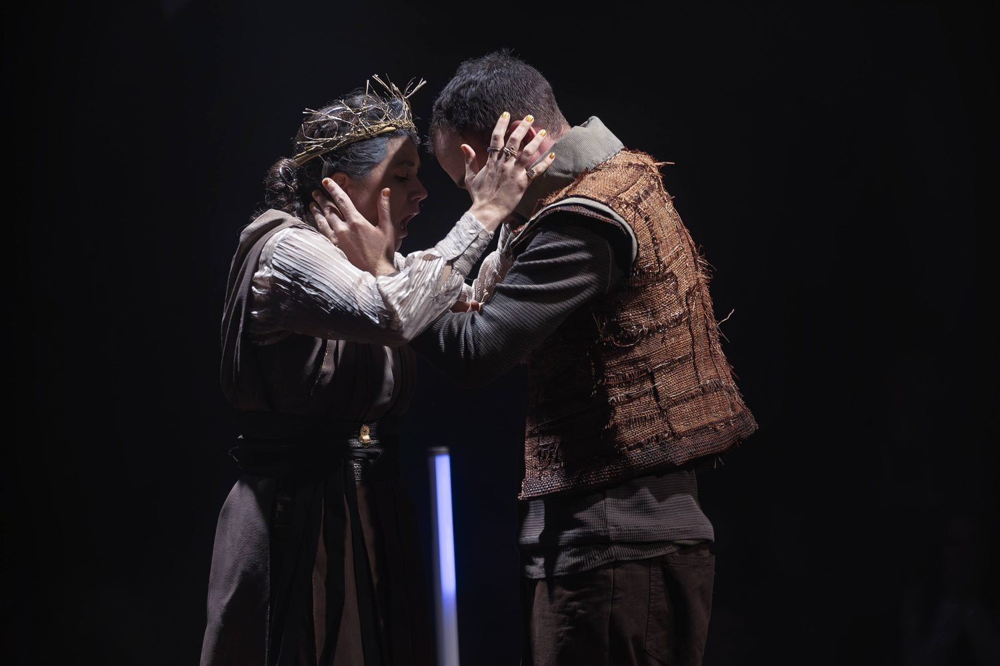
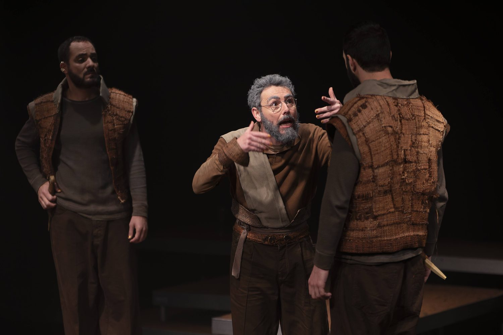
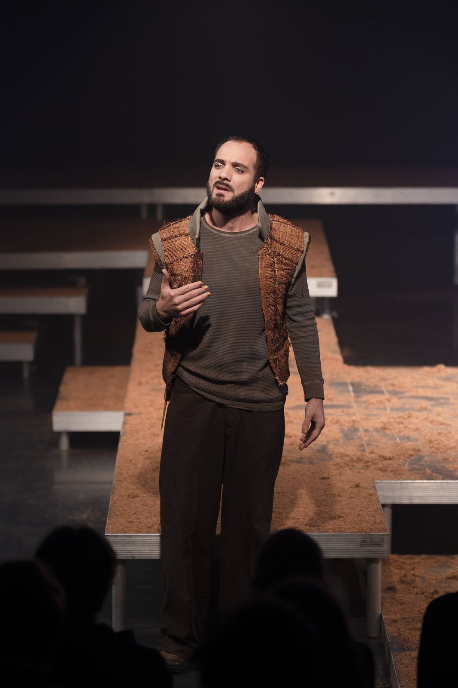
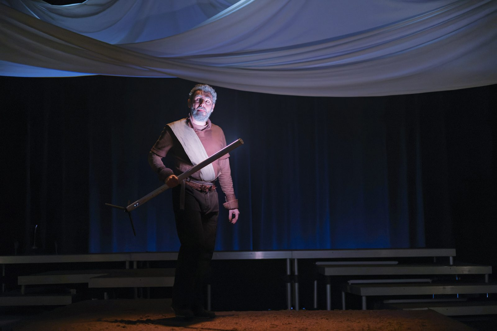
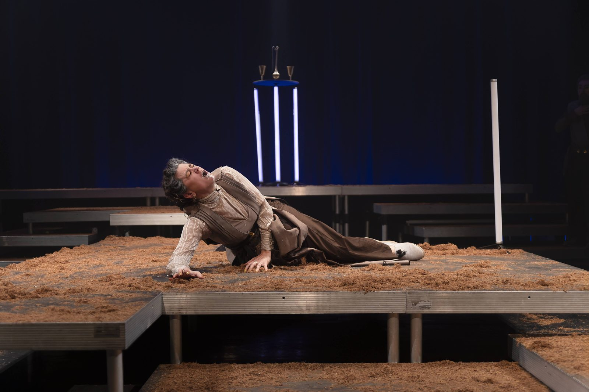

2024 · En tournée
Cléophène
d’après Rodogune, de Corneille
Rôle Antiochus
Théâtre des Crescite — Angelo Jossec
Royaume de Pyrie, 124 av. J-C.
Lorsqu’un roi meurt et qu’il est père de jumeaux, lequel des deux est l’aîné et doit prendre sa place ? La reine veuve Cléophène, dépositaire du pouvoir, doit céder sa couronne, et elle seule connaît le secret de son successeur...
Prochaines représentations
- 18 déc. 2026 L'Eclat, Pont-Audemer (27)
- 26 janv. 2027 Le Forum, Falaise (14)
- 29 janv. 2027 Théâtre de la ville de Saint-Lô (50)
- 30 janv. 2027 Théâtre de la ville de Saint-Lô (50)
- 2 fév. 2027 La Ferme de Bel Ebat, Guyancourt (78)
Photographies






Photographies : Arnaud Bertereau
Distribution
- Angelo Jossec
- Manon Rivier
- Lauren Toulin
- Johann Abiola
- Adrien Vada